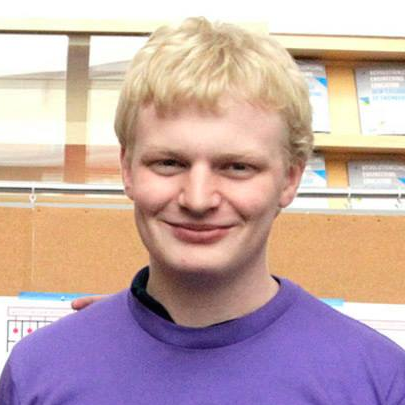

Franton Lin
A sophomore studying Electrical and Computer Engineering, Franton has always enjoyed fiddling with electronics. For this project, he focused on precise stepper motor control and communications. In his free time, Franton thoroughly enjoys various hobbies, including digital photography, baking pies, and road cycling.
Personal Portfolio
Chris Beck
Chris is studying Mechanical Engineering and Software at the Olin College of Engineering. He worked primarily on systems integration and the user interface, creating the GUI and computer program, collaborating with Franton to send commands from the GUI to the Arduino Outside of class, Chris mentors FIRST Robotics teams from his home town in Florida and sleeps.
GitHub Profile
Wilson Tang
Wilson is a pre-med studying Electrical and Computer Engineering at the Olin College of Engineering. He worked on organizing the project work and assisted in designing the electrical and mechanical systems to be able to quickly integrate prototypes, iterating towards a finished prototype. In his free time he works on hacking the medicine to make it better through hackathons and side projects.
Thuc Tran
Thuc is a second year engineering student from Olin College of engineering, and is somewhere between mechanical, electrical, and self-designed aerospace engineering. He worked on the mechanical, integration, and facilitation for the team. In his free time, he works on rockets, goes climbing, and plays sports.

Gordon Haag
Gordon Haag is a Mechanical Engineering student. He is interested in aerospace and manufacturing. For this project, he worked on mechanical design and integration.